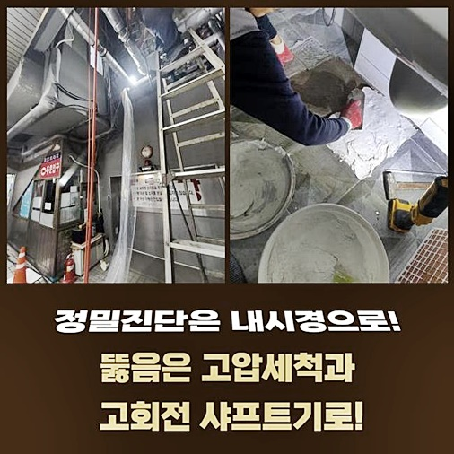
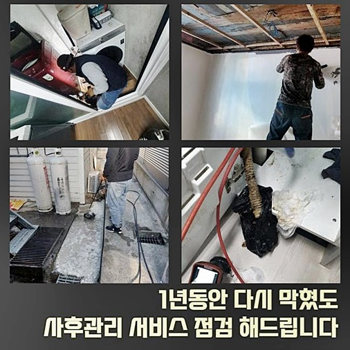
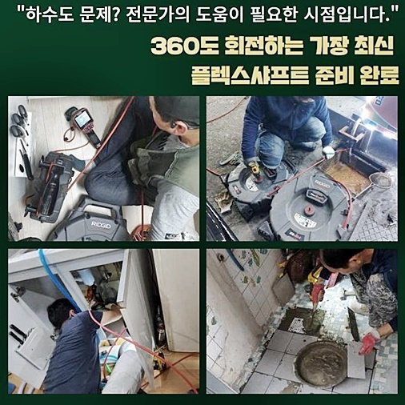
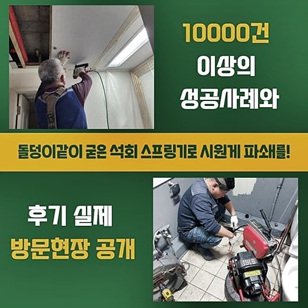
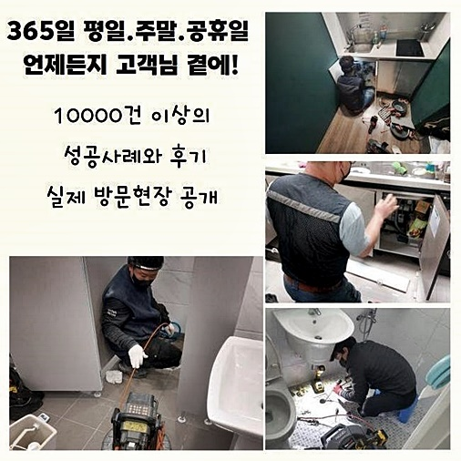

🏠 도봉 방학동화장실막힘 창동 횡주관청소 설비공사
용인시 처인구 배관막힘 전문 시공 후기

📋 작업 개요
- 위치: 용인시 처인구, 수원시 영통구, 화성시 동탄
- 서비스 유형: 배관막힘, 고압세척, 내시경점검
- 작업 일시:
- 업체명: 하수구수사대 (010-5615-2118)
🔍 문제 상황
도봉 방학동화장실막힘 창동 횡주관청소 설비공사
어느날 APT에 살고있었던 고객분이 개수대가 막혀버려서 점검들을 바라셨어요
싱크대의 경우 설거지등을 한다거나 식재료를 취급하는 와중 음식잔해나 기름류가 하수도로 흘러가는 경우가 자주 일어나죠
깊은 곳에서 잔해들이 켜켜히 자리잡으며 통수를 정체시키죠
때때로 점검해보고 청소하는게 큰 비중을 차지하는데 신경써서 이해하는게 힘들기에 증세가 성큼 다가온다면 속전속결로 전문진에게 도움을 청해 바로잡는게 좋죠
문제장소에 방문드려 내시경기기를 가용시켜 배수관의 컨디션을 진단해요
이렇듯 막힘문제가 생겨났다면 초입에서부터 오염물이 역류하게 될 여지가 높은데요
예측한것처럼 초입에서부터 고여버려 명확한 잔해물의 종류들을 제대로 알기엔 어려웠죠
그리하여 육안으로 보이는 곳부터 하수들을 청소하고 재차 내시경장치를 가용시켜 점검해주었는데요
입구부터 오수들이라던지 잔해들을 조속히 사라지게할 때 석션기처럼 좋은것도 없죠
흡입력들을 발휘한 뒤 오수들을 흡입해주어 청소해요

🔎 원인 분석
💡 전문가 진단: 정밀 진단 장비를 사용하여 슬러지의 고착 여부를 판명하고 타격/세척 작업을 실시했습니다.
그러나 고착되었다거나 표면에 접착된 슬러지를 세척할 땐 청소방식이 상이해 샤프트장치와 운용해줄땐 효과가 크게 나타나요
우선 관찰되는 부분에서부터 존재하던 오수들을 청소해주려는 목적으로 석션장치를 가용시켜 빨아당기고 재차 내시경장치 이용에 착수해요
내시경장비의 선을 배수관의 심부에까지 진입해주어 확인하니 상당수의 기름이 존재했어요
보통 때에 싱크대쪽을 쓸 때 조리도구나 기름들이 낀 그릇을 세척해줄때 기름들을 구석구석 제거하고 설거지들을 실시하는 사례가 얼마나 계신다고 생각하시나요?
기름성분이 남아있는 접시를 닦을때 기름들이 개수대의 하수관에 자연스레 흘러가요
또한 배수관에서 굳게되며 단단해진 이물로 변모하죠
기름의 경우 뜨거운 물들에 녹겠으나 장기간 지속되어 고착현상까지 불거졌을 땐 해당 방법도 큰 효과는 없습니다
때문에 막혀버린 증세를 타파해내기위하여 실시되는게 샤프트도구를 사용한 세척입니다
장치의 헤드의 체인부가 벽면을 지나가면서 원운동을 통해 이물들을 제거시킵니다
해당 절차를 반복하면 여기저기 축적된 기름들과 이물이 탈거되요
사용된 장치의 장비는 내시경장비와 같게 케이블로 구성되어있습니다

🔧 작업 과정
그렇기때문에 샤프트기의 장비와 내시경기기의 선이 같이 삽입됩니다
배수관을 구석까지 살피면서 막혀버린 증세를 시정하기때문에 조속한 청소들이 가능한것이죠
막히게된 오류들이 발생되는 연유는 많으나 그 가운데 기름들이 배수관의 지나치는 공간들도 막게되며 솟구치는 문제가 자주 생기게됩니다
그정도로 기름기가 문제들이 된다는 사실을 보여주는데 쌓여가는 이물들을 사용습관들을 바꿔서 크게 줄이는건 아니죠
때문에 일상을 영위하시면서 싱크대쪽을 쓰시면서 기름들은 최대한 제거시키고 그릇세척들을 실시해주는게 좋아요
그리고 주기성을 갖추고 하수관에 온수를 흐르게하면서 기름이 내부에서 축적될 수 없게 해주시면 불편들을 피하는데 이점이 많아요
계속해서 샤프트기기의 작업을 반복하면 막히는 문제를 야기시키던 기름슬러지들과 잔해들이 청결하게 청소된걸 확인했습니다
작업이 끝났다면 작업된 모습을 내시경장치를 통하여 구석까지 체크할 수 있기에 의뢰자로 하여금 안심되겠죠?
추후에 막히는 증상이 생기지않게 관리책들과 유의해야할 것도 설명드리고 있기에 다시 결함이 반복되지않게끔 이용하시는 분이 관심들을 기울이시어 관리하는 게 좋은데요
금일의 장소에선 트랩부품도 세심하게 연결해드렸는데요
트랩설치는 이물이 배수관으로 직관적으로 흐르지못하도록 방어하는 효과를 지니고있고 수월한 배수과정을 되찾고자 상당수 설치하시는 부품이죠
그렇지만 트랩쪽에 잔해물이 축적되면 막혀버리는 증상이 재발할 여지가 있으므로 자주 청소들을 이행하며 청소하는게 좋다고 말씀드렸죠
설치까지 마무리되었을 땐 주름호스와 하수도에 틈새가 생길 수 없도록 접착해주었어요
연결부에서 틈새가 발생되면 악취가 생활공간으로 흘러들어와 불편들은 가중될 수 밖에 없어요
그러하기에 최대한 꼼꼼하게 연결해주었는데요
이번 고객님댁에서 빠져나온 기름고착물의 형태입니다
예상보다 상당수의 오염물이 안에서 쌓여있던 모습이라 시간들도 생각외로 길어졌어요
허나 오랫동안 걸릴지언정 문제를 시정해내도록 계속해서 노력을 거듭해요


✅ 작업 완료
하수들이 빠르게 배출되는 모습도 의뢰인분과 체크를 거쳐 저희의 전문가들은 주변까지 정리해드리고 철수했죠
주방 배수구가 막힐 경우 연유는 주로 안쪽에서부터 잔해들이나 기름류가 침전된 경우로 볼 수 있어요
그렇지만 설비의 형태나 하수도의 상태에 그러므로 양상이 천차만별이라 전문가들에게 연락하여 해결을 받아보고 바로잡는게 안정적일테죠
완전한 해결이 요구될 때 언제라도 문의해보세요!
고객분께서 계신 곳으로 서둘러 내방하겠습니다!


⚠️ 하수구 배관 막힘 예방 및 관리 가이드
- ✅ 머리카락, 비닐, 물티슈 등 물에 분해되지 않는 이물질은 절대 흘려보내지 마세요.
- ✅ 기름기 많은 식기는 설거지 전 키친타올로 먼저 기름때를 닦아내세요.
- ✅ 주기적으로 배수구에 뜨거운 물을 가득 부어주어 유지방 고착을 방지하세요.
- ✅ 작업 후 1년 이내 재발 시 무상 A/S 보증 서비스를 제공합니다.
💡 핵심 정리
- 확실한 장비 작업(내시경 점검 및 샤프트 스케일링)으로 원인을 뿌리 뽑습니다.
- 작업 후 1년 이내에 동일한 부위 재발 시 100% 무상 A/S 서비스를 보장합니다.
- 서울 · 경기 · 인천 전 지역에 24시간 언제든 긴급 출동할 수 있도록 항시 대기 중입니다.
❓ 자주 묻는 질문 (FAQ)
🚨 용인시 처인구 배관막힘 문제로 고민이신가요?
정확한 원인 진단과 확실한 시공으로 재발 없는 해결을 약속드립니다.
24시간 긴급 출동 | 서울 · 경기 · 인천 전지역 | 1년 내 재발 시 무상 A/S